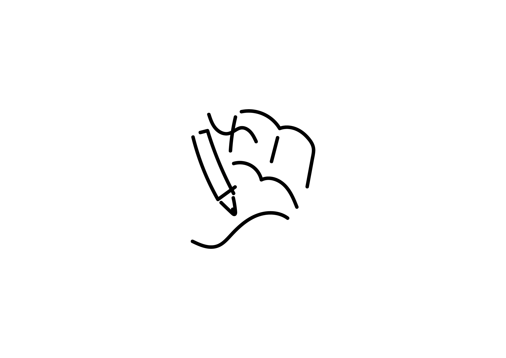
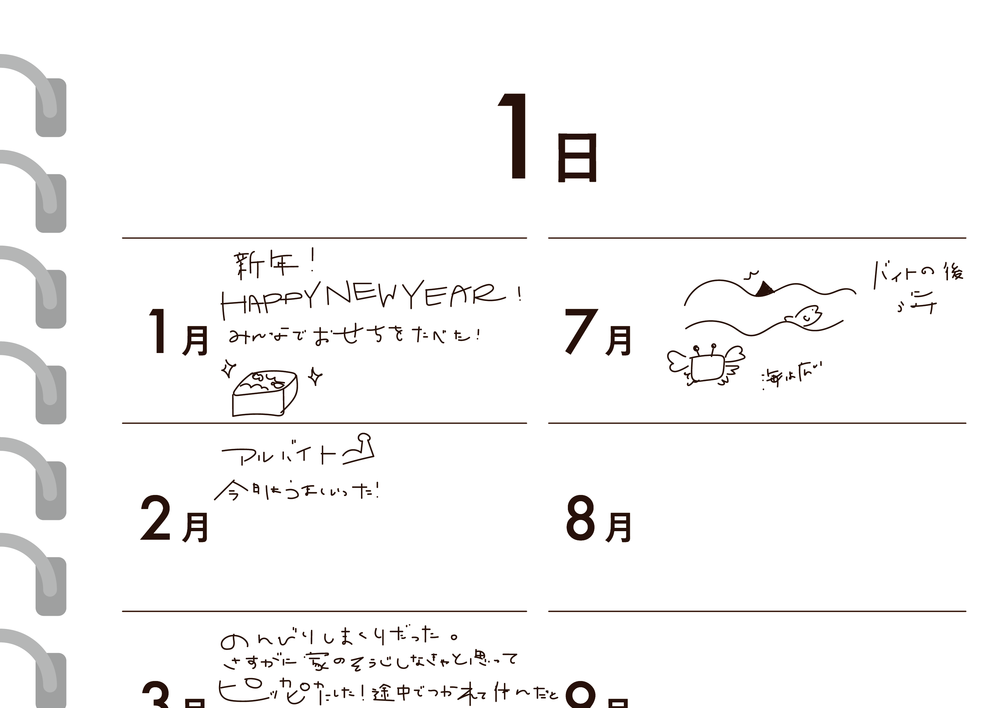
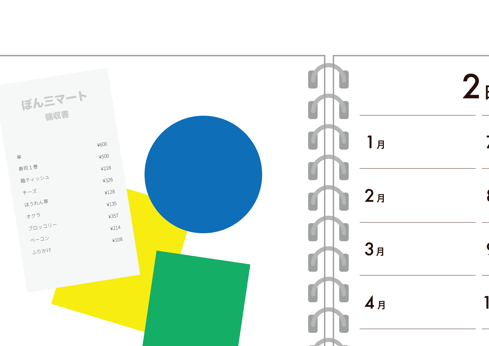
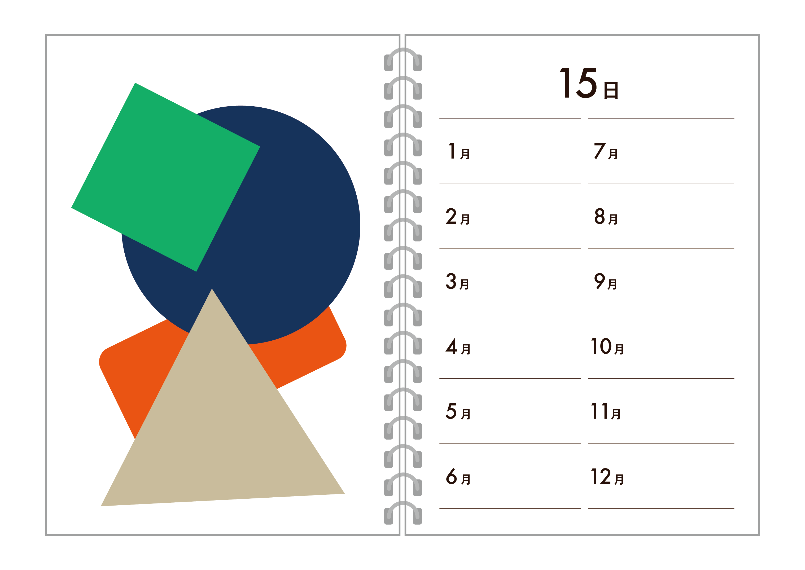

にちげつダイアリー
月日を逆に、その日の月を振り返る日記

同じ日のそれぞれの月を見返しながら、自分の変化や出来事を記録して1年間を振り返ることができる日めくり日記
歳を重ねるにつれて日々の流れをとても早く感じるようになります。
どんな自分だったのか、少しでも忘れないように1年間の思い出と「日」を振り返られるものを作ろうと考えました。
この日記は、「日」に焦点を当て、その日のそれぞれの月を振り返ることができる日記です。
1月5日、2月5日、3月5日と、1年間の同じ日を月ごとに見返しながら、自分の変化や出来事を記録・貼っていきます。
「めくること」で小さな積み重ねから自分を受け入れられるきっかけになり、「触ること・貼ること・書くこと」でデジタルでは得られない感触や温かみ、自分の思いや感情をゆっくり振り返ることができると考えています。
この日記を使うことで、日々の忙しさの中にも季節や時の違いを一度に感じられる、自分自身と向き合う大切な時間ができればいいなと思います。

その日に起きたことや感じたこと、料理や使ったものなど
どんなことでもOK!なんでも書いてみよう

今日1日で見つけたり貰ったり描いたものを貼ってみよう

1年間の同じ日のそれぞれの月を記録して見比べることで
自分の新たな発見や成長が見えてくるかもしれません！